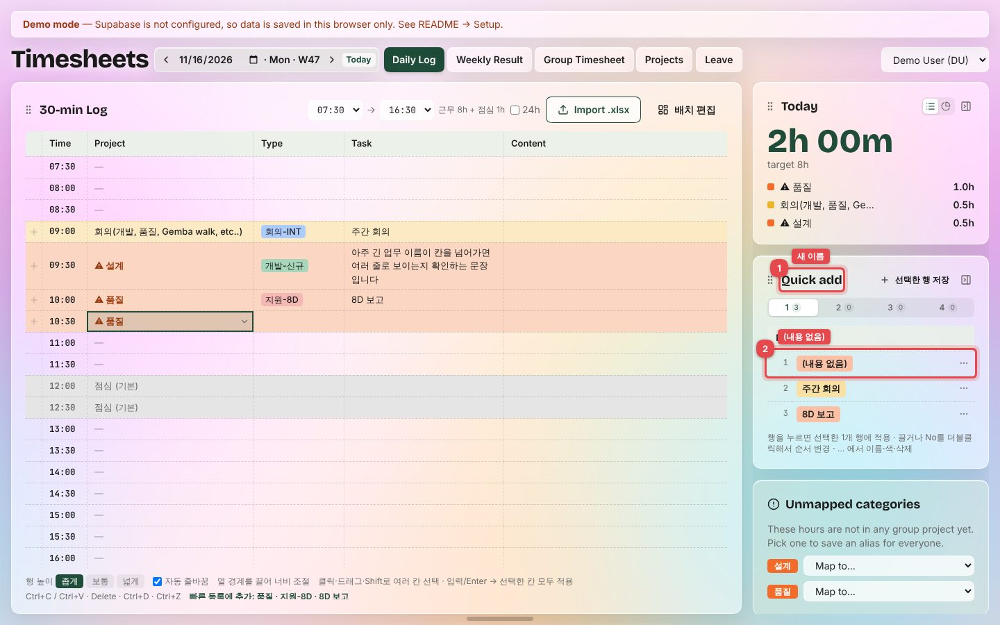
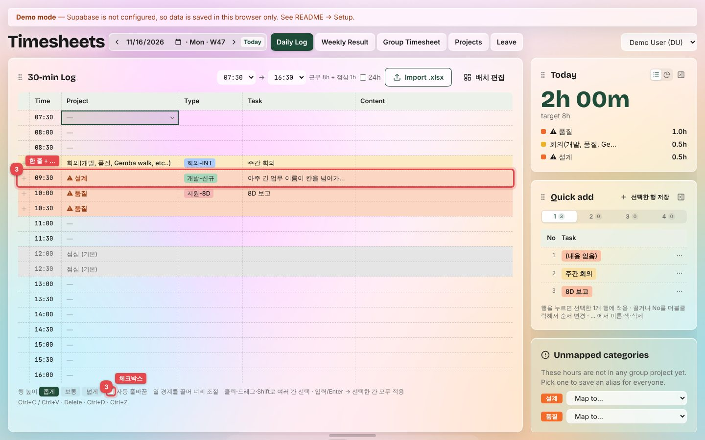
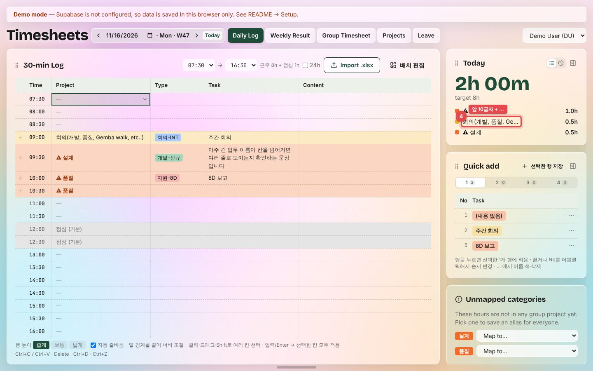
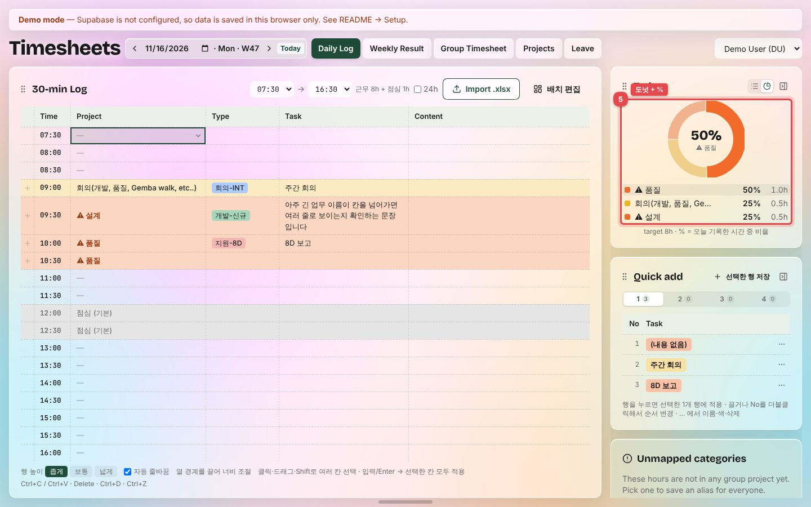
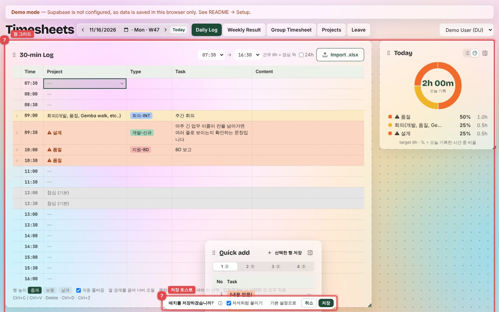
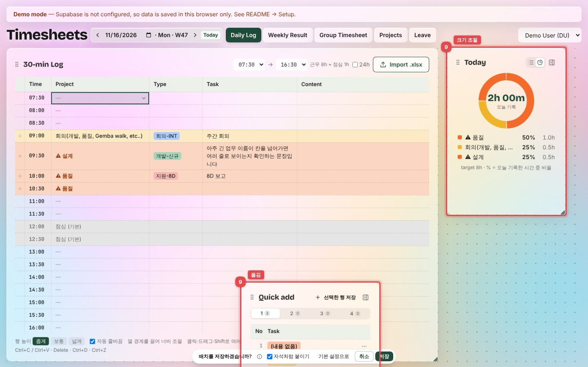
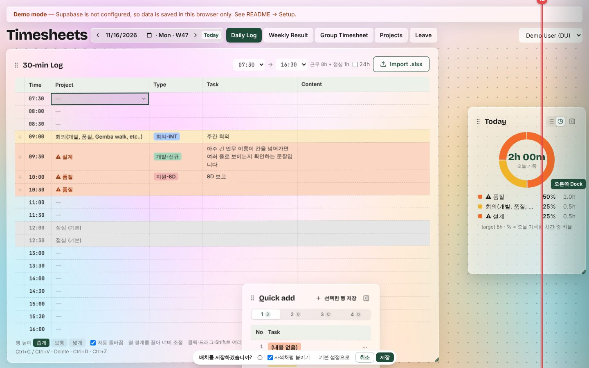
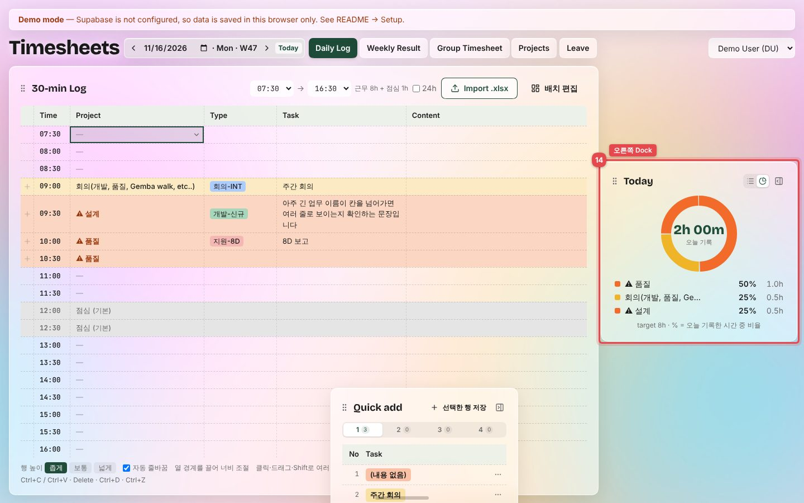
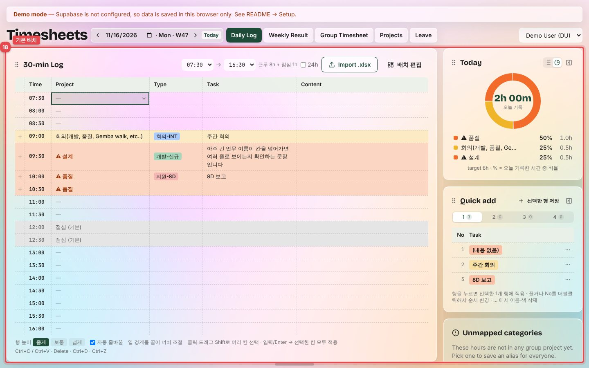
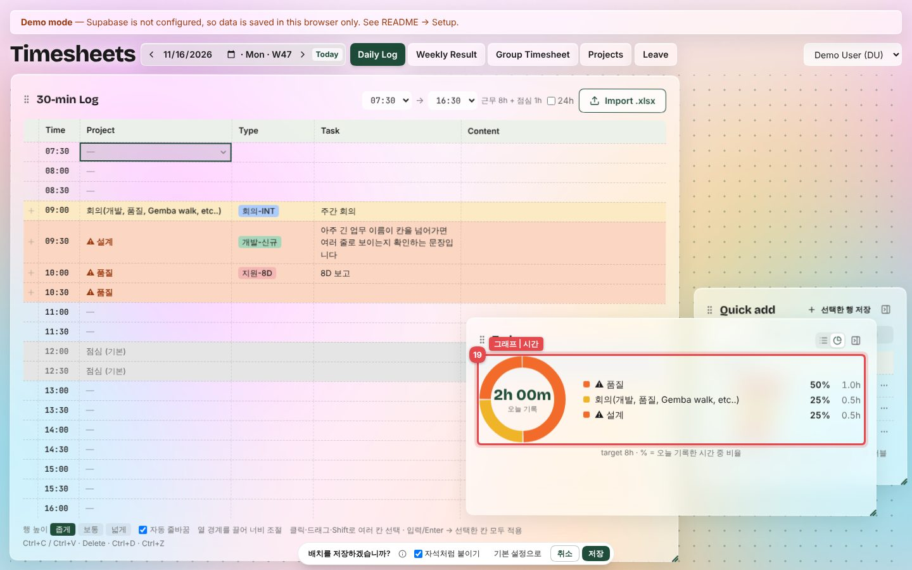

검증 보고서 · E2E
Task 없이 저장하면 (내용 없음) 또는 확인. 반복 업무 → 빠른 등록. 자동 줄바꿈 체크박스. 30-min Log · Today · 반복 업무 창의 크기·위치 조절(점 그리드, 아이폰처럼 흔들흔들, 저장/취소/기본 설정 토스트, 사용자마다 저장). Today 도넛 그래프. Today · 반복 업무를 아래 Dock처럼 오른쪽으로 숨기는 기능과 자석 체크박스.
| # | 테스트 케이스 | 기대 결과 | 실제 결과 | 판정 근거 (Assertion) | 결과 | 증적 |
|---|---|---|---|---|---|---|
| 1 | 창 이름: Quick add (한국어 화면은 빠른 등록) | 영문 화면 제목 'Quick add' | 'Quick add' | templates-panel h2 === 'Quick add' | PASS | 화면 1 |
| 2 | Task가 빈 행: 확인을 묻고, 저장하면 (내용 없음) | 확인 창 2번(취소 → 저장 안 됨, 확인 → 저장), 표에 '(내용 없음)' | 확인 창 2번, 취소 후 0행, 저장 후 '(내용 없음)' | dialogs === 2 && 취소 후 0행 && Task 칸 === '(내용 없음)' | PASS | 화면 1 |
| 3 | 자동 줄바꿈을 끄면 한 줄(행 높이 그대로), 마우스를 올리면 전체 글, 설정 유지 | 켬: 행이 늘어남(> 31px) / 끔: 빈 행과 같은 31px, title에 전체 글, 새로 고쳐도 꺼짐 | 켬 68px / 끔 31px, title 있음, 새로 고침 후 꺼짐 | wrapped > 빈 행 && oneLine === 빈 행 높이 && title 에 전체 글 && 새로 고침 후 unchecked | PASS | 화면 2 |
| 4 | 좁은 창의 긴 이름: 앞 10글자 정도 + …, 마우스를 올리면 전체 | 긴 프로젝트 이름이 잘리고(…) 폭 ≤ 10글자(약 140px), title에 전체 이름 | '회의(개발, 품질, Gemba walk, etc..)' 잘림, 폭 140px, title 전체 이름 | scrollWidth > clientWidth && clientWidth ≤ 10em && title === 전체 이름 | PASS | 화면 3 |
| 5 | Today 그래프: 도넛, 가운데 합계, 항목별 %, 올린 항목의 % | 조각 3개, % 합 ≈ 100, 가운데 2h 00m, 올리면 가운데에 그 항목 % | 조각 3개, % 50+25+25 = 100, 가운데 '2h 00m 오늘 기록', 올렸을 때 '50% ⚠ 품질' | slices === 3 && |합 − 100| ≤ 2 && center 에 2h 00m && hover 시 % | PASS | 화면 4 |
| 6 | 그래프 보기 선택은 저장됨 | 새로 고쳐도 도넛 | 도넛 | today-donut count === 1 | PASS | — |
| 7 | 배치 편집: 점 그리드, 창 3개가 흔들림, 저장 토스트 | 점 그리드 있음, data-jiggle 3개, 토스트 '배치를 저장하겠습니까?' + 저장/취소/기본 설정으로 | 점 그리드 1개, 흔들림 3개, 버튼 기본 설정으로/취소/저장 | dot-grid === 1 && jiggle === 3 && 토스트 버튼 3개 | PASS | 화면 5 |
| 8 | 저장 물음은 맨 아래 작은 한 줄, 아래 Dock은 숨음 | 높이 ≤ 44px, 화면 아래에서 16px 안, Dock 숨김 | 높이 36px, 아래 여백 8px, Dock 숨김 | bar.height ≤ 44 && 900 − bottom ≤ 16 && dock visibility hidden | PASS | — |
| 9 | 크기 조절과 옮기기가 점 간격(24px)에 맞춰짐 | Today 폭 줄고 높이 늘어남, 빠른 등록 왼쪽 아래로 이동, 모든 값이 24의 배수 | Today 336×312 → 288×408, 빠른 등록 (1080,336) → (576,576) | t1.w < t0.w && t1.h > t0.h && q1.x < q0.x && q1.y > q0.y && 값 % 24 === 0 | PASS | 화면 6 |
| 10 | 저장한 배치는 새로 고쳐도 그대로, 흔들림 멈춤 | Today 288×408, 빠른 등록 (576,576), 흔들림 0 | Today 288×408, 빠른 등록 (576,576), 흔들림 0 | 새로 고친 뒤 rect 가 저장 전과 같음 && data-jiggle=true 0개 | PASS | — |
| 11 | 제목줄을 끌어도 편집 시작, 취소하면 되돌아감 | 토스트 나타남, 옮긴 x ≠ 1080, 취소 후 x = 1080 | 토스트 나타남, 옮긴 x 792, 취소 후 x 1080 | toast && moved.x !== saved.x && back.x === saved.x | PASS | — |
| 12 | 자석 켬: 오른쪽 끝으로 끌면 오른쪽이 강조됨 | '오른쪽 Dock' 강조 1개 | 1개 | edge-drop-hint count === 1 | PASS | 화면 7 |
| 13 | 놓으면 Today가 오른쪽 Dock으로 | Today가 오른쪽 Dock 안에(페이지에는 없음) | 오른쪽 Dock 안 | edge-dock 안 today-panel && 페이지 안 0개 | PASS | — |
| 14 | 오른쪽 Dock: 평소 숨고, 마우스가 오른쪽 끝에 오면 나타남 | 처음 'false' → 오른쪽 끝에서 'true' | 'false' → 'true' | data-shown 'false' → 'true' | PASS | 화면 8 |
| 15 | 멀어지면 다시 숨음 | data-shown 'false' | 'false' | data-shown === 'false' | PASS | — |
| 16 | 자석 끔: 오른쪽 끝에 놓아도 붙지 않음 | 강조 없음, 빠른 등록은 그리드에 남음 | 강조 0개, 위치 'grid' | edge-drop-hint 0개 && data-place === 'grid' | PASS | — |
| 17 | 버튼으로 오른쪽 Dock에 넣고 꺼냄 | Today는 페이지로, 빠른 등록은 오른쪽 Dock으로 | 그대로 됨 | page 안 today-panel && edge-dock 안 templates-panel | PASS | — |
| 18 | 기본 설정으로: 처음 배치(왼쪽 30-min Log, 오른쪽 Today · 빠른 등록) | data-layout 'default', 오른쪽 Dock 없음 | 'default', 오른쪽 Dock 0개 | data-layout === 'default' && edge-dock 0개 | PASS | 화면 9 |
| 19 | Today 창을 넓히면 왼쪽 그래프, 오른쪽 시간(이름 전체) | 목록이 도넛 오른쪽에, 긴 이름도 잘리지 않음 | 목록 x 917 / 도넛 오른쪽 끝 893, 이름 전체 | legend.x > donut.right && 이름 scrollWidth ≤ clientWidth | PASS | 화면 10 |
| 20 | 휴대폰은 고정 배치(배치 편집 없음) | 배치 편집 버튼 0개 | 0개 | button 배치 편집 count === 0 | PASS | — |
| 21 | 페이지 오류 없음 | 0건 | 0건 | pageerror 수 === 0 | PASS | — |
빨간 테두리와 번호는 표의 테스트 케이스 번호입니다. 그 요소를 확인해 판정했습니다.









